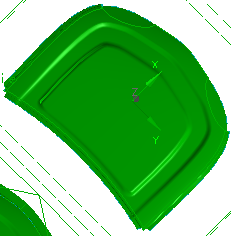

预计完成这堂课需要：4–6 分钟
使用修边工序命令来指定要在钣金上执行的所有修剪工序。

修剪是通过使用修边模具在钣金内部生成大的剪裁或沿钣金外部修剪材料的加工方法。相反的，钣金内部小的开口通常是使用标准冲裁设备加工的。
应用模块
开始→所有应用模块→车辆制造自动化→冲模工程
先决条件
您必须处于建模应用模块中。
在使用修剪工序之前，您的操作中应至少包含一个下列特征：成形工序、冲压型面复制、区域填充和/或翻边工序。
工具条
冲模工程→修边工序
菜单
工具→车辆制造自动化→冲模工程→修边工序